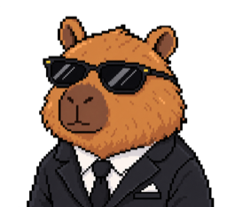

cat practice.txt
Infrastructure for machines that think.
I work where AI agents meet distributed systems — building the full agent harness that puts LLMs to work, and the infrastructure that keeps it all running.
Experience
AG2 // formerly AutoGen
Senior Software Engineer, Agentic Systems
Building agentic systems on the open-source AgentOS (4.9k★) from the creators of AutoGen.
- Shipped MCP server support — serve any AG2 agent as an MCP server, with OAuth resource-server auth
- Built observability integrations across the LLM tooling ecosystem: Opik, OpenLLMetry, mcp-agent
- Core engineer on Sutando, an autonomous personal AI agent with voice, vision, and multi-channel bridges
Beam // YC W22
Founding Engineer
Ultrafast serverless GPU cloud for AI workloads — inference, sandboxes, and background jobs.
- #4 all-time contributor to beta9, Beam's open-source engine — 276 pull requests over four years
- Led usage-based billing, real-time analytics pipelines, and task messaging infrastructure
- Built the Sandbox SDK for JavaScript, checkpoint/restore for pods, and the platform's auth & token systems
Open Source
Pull Requests
Loading pull requests…
Projects
sutando
Autonomous personal AI agent — voice, vision, memory, and self-healing skills. 45+ PRs across health-checks, metering, and agent bridges.
otto // meeting copilot
Desktop meeting copilot for macOS — real-time transcription and assistance.
az-termite-report-scanner
Scrapes Arizona's public termite-report registry so homebuyers don't have to.
bert-mental
Fine-tuned BERT models for mental-health text classification.
The Agent Harness
A model on its own is a brain in a jar. The harness is everything wrapped around it that turns raw LLM calls into an agent you can actually trust with work — each of these is a system I've shipped in production:
memory
The layer everyone underestimates. It's not one store — it's four systems with different lifetimes:
Built these for Sutando's vault + session replay and AG2's memory streams (episodic rebuild per turn, semantic recall over embeddings).
tool suite
The agent's verbs. Tool schemas a model can reliably follow, deterministic dispatch, results truncated and framed for the context window, credentials injected at call time so they never touch the prompt — and MCP on both sides, so tools compose across processes and editors.
skills manager
Capabilities as loadable bundles — instructions + tools packaged together, discovered, loaded, and unloaded at runtime so the agent carries only what the task needs. The agent browses its own catalog instead of shipping every tool in every prompt. Built AG2's skill runtime and Sutando's skill loader on this pattern.
security
Agents run untrusted-by-default: sandboxed execution, scoped credentials injected per call (never in the prompt), auth & token systems, OAuth for MCP servers. Shipped the token/auth layer at Beam and the MCP OAuth resource server in AG2.
guardrails
Bounded autonomy — allowlisted tools, rate and spend caps, step limits, confirmation gates on side effects. The difference between an agent that works and one you have to babysit.
evals
You can't improve what you don't measure: regression suites over agent behavior, tracing every tool call and token, observability wired through Opik and OpenLLMetry. Evals are the CI of agentic systems.
human
The outermost loop stays human — pending-question queues, approval gates, escalation paths. A good harness knows when to stop and ask.
Hire My Twin
An agent built on my experience — it consults on beam.cloud infrastructure (with live search over the Beam docs), agentic systems (MCP, AG2/AutoGen), and code design. Talk to it here, or wire it into your editor over MCP.
> — or click the capybara in the corner
# or hook the twin into your editor — tools: ask_john_twin · search_beam_docs · about_john
# claude codeclaude mcp add --transport http john-twin TWIN_URL/mcp# cursor — ~/.cursor/mcp.json{ "mcpServers": { "john-twin": { "url": "TWIN_URL/mcp" } } }# claude desktop / other clientsnpx mcp-remote TWIN_URL/mcpWriting
Toolbox
